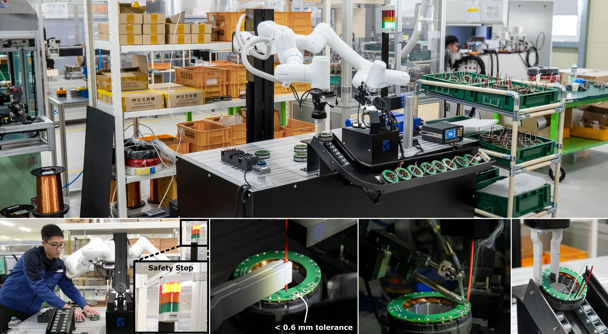
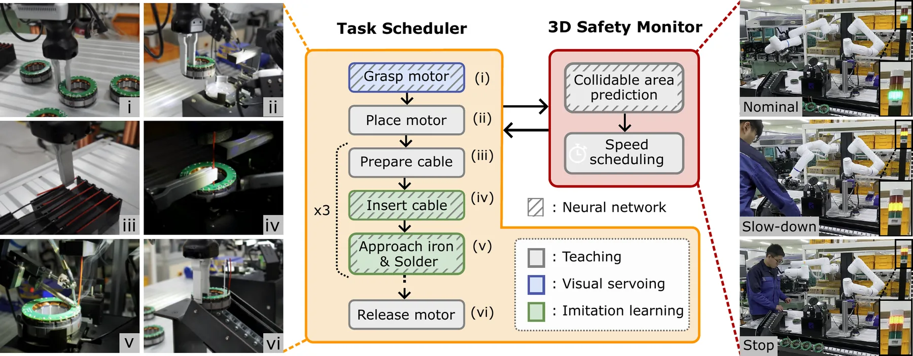
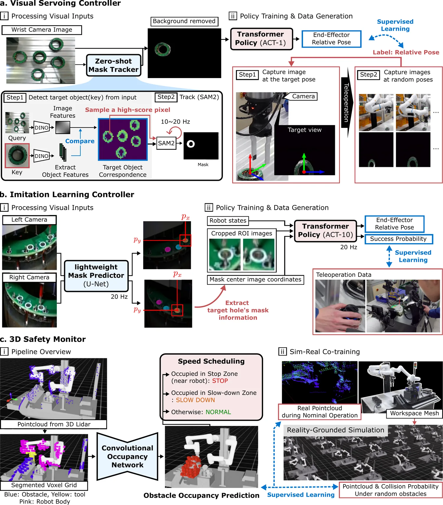
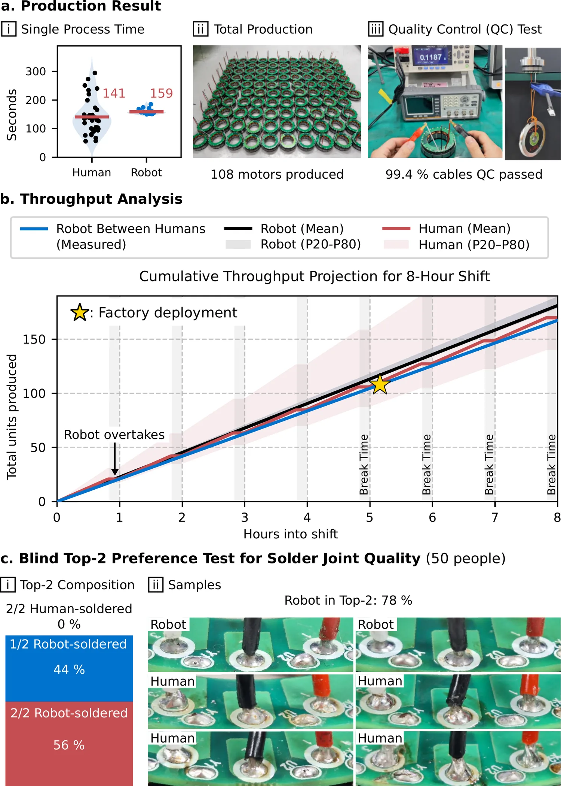

Neuromeka AI Lab · Preprint 2026
Learning-augmented robotic automation for real-world manufacturing
Neuromeka Co., Ltd., Seoul, Republic of Korea · * Corresponding authors: yunho.kim@neuromeka.com, joonho.lee@neuromeka.com

Abstract
Industrial robots are widely used in manufacturing, yet most manipulation still depends on fixed waypoint scripts that are brittle to environmental changes. Learning-based control offers a more adaptive alternative, but it remains unclear whether such methods, still mostly confined to laboratory demonstrations, can sustain hours of reliable operation, deliver consistent quality, and behave safely around people on a live production line. Here we present Learning-Augmented Robotic Automation, a hybrid system that integrates learned task controllers and a neural 3D safety monitor into conventional industrial workflows. It retains the core industrial automation backbone while introducing learning only where adaptability is needed. We deployed the system on an electric-motor production line to automate deformable cable insertion and soldering under real manufacturing constraints, a step previously performed manually by human workers. With less than 20 minutes of real-world data per task, the system operated continuously for 5 hours 10 minutes, producing 108 motors without physical fencing and achieving a 99.4% pass rate on product-level quality-control tests. It achieved near-human takt time with reduced cycle-time variability while consistently producing high-quality solder joints comparable to those of experienced operators. These results establish a practical pathway for extending industrial automation with learning-based methods.
Summary video
Watch on YouTube ↗Learning-augmented robotic automation

More details Learning-based components
Overview of the learning-based components

Production-line deployment
Watch on YouTube ↗We deployed the system through continuous operation on a live electric-motor production line at the Neuromeka Pohang factory. Throughout the deployment, the system produced 108 motors over approximately 5 hours 10 minutes.
Production outcomes and validation

Adaptive behavior of neural controllers
Watch on YouTube ↗Neural controllers handled inevitable variability during the production process. They adjusted motion to handle randomness in motor pose, hole position, and cable bending.
Efficient risk reduction with a neural 3D safety monitor
Watch on YouTube ↗The neural 3D safety monitor enabled safe human-robot coordination without physical fencing and reduced avoidable downtime. When workers approached to load materials or retrieve completed products, the system reduced speed or paused as needed and resumed autonomously.